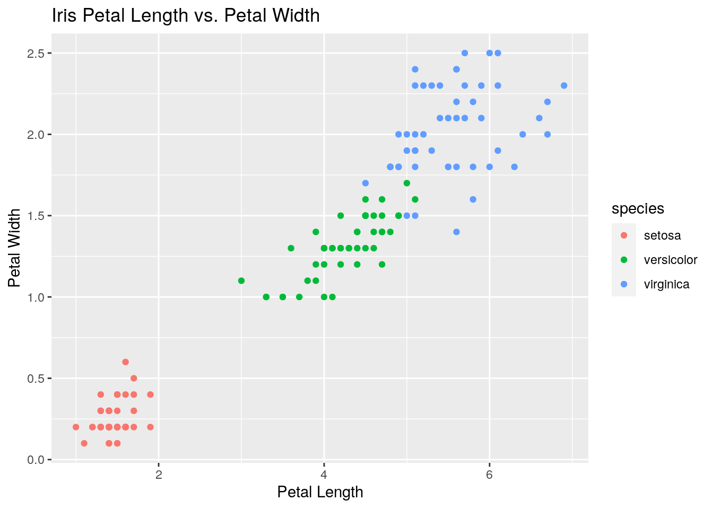

Reticulate is a really cool function in R studio that allows us to use two coding languages at the same time! In this blog post, we'll see how R and python can be used simultaneously for different functions.
library(reticulate)
library(ggplot2)
library(ggExtra)For example, I have the iris dataset imported into python here:
import seaborn as sns
df= sns.load_dataset('iris')However, if I only like to make graphs using ggplot in R, then I can save the iris dataset (abbreviated to df) into R. To do this, I use the code py$"dataframename" and save that as the name I want in R. Then, I can use ggplot to plot the variables of petal length and petal width!
df<-py$df
plot1<-ggplot(df) + geom_point(aes(petal_length, petal_width))
plot1 + ggtitle("Iris Petal Length vs. Petal Width") +
xlab("Petal Length") +
ylab("Petal Width")
We can even do it the other way, starting with a dataset imported in R. I'll import the ChickWeight dataset from R:
ChickWeight <- as.data.frame(ChickWeight)A really simple piece of information we can get in python is the shape of this dataset. By using "shape", we see that there are 578 rows and 4 variables (columns)!
r.ChickWeight.shape## (578, 4)